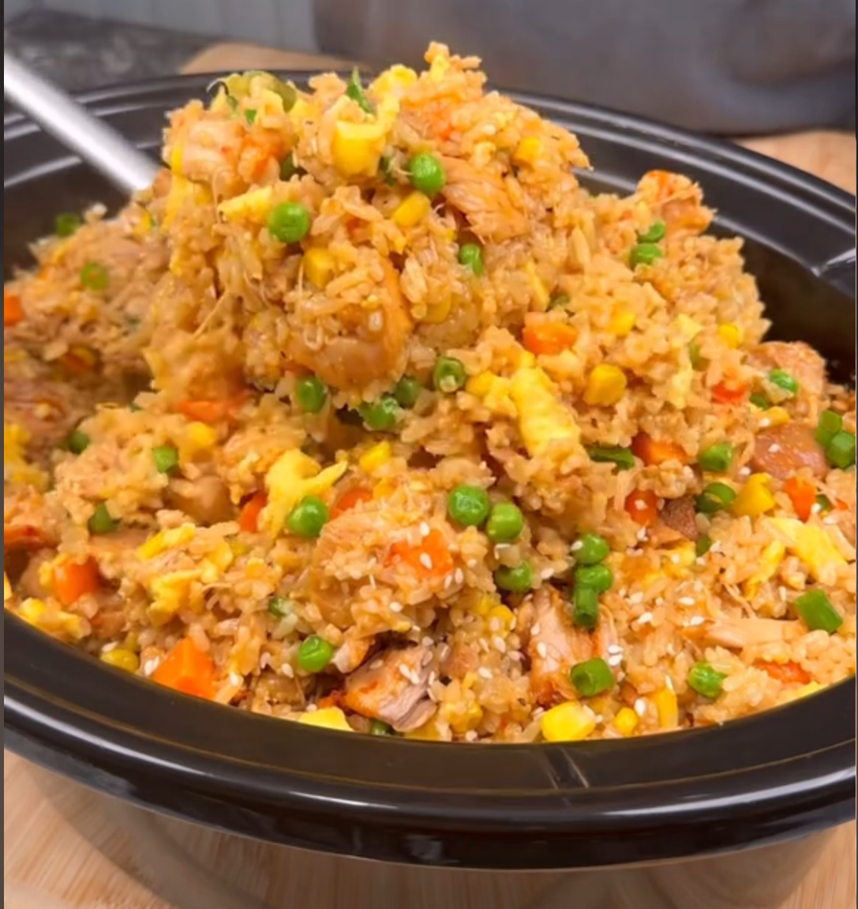

Chili Garlic Chicken Fried Rice

Image sourced from the TikTok
Another easy meal, makes multiple servings for easy meal prepping.
Recipe sourced from this meal prep TikTok
Ingredients
Chicken in the slow coooooooooker
- 48 ounces chicken thighs, sliced in half
- 4 tablespoons chili garlic sauce
- 2 tablespoons soy sauce
- 3 tablespoons honey
- 1 tablespoon minced ginger
- 1 tablespoon rice vinegar
- Salt and pepper
Rice
- 1400 grams of pre-cooked or leftover rice
- 600 grams mixed frozen veggies or veggies of choice
- 4 tablespoons soy sauce
- 2 tablespoons fish sauce
- 3 tablespoons honey
- 2 tablespoons rice vinegar
- 2 tablespoons toasted sesame oil
Eggs
- 400 grams egg whites
- 6 eggs
Toppings
- Green onions
- Sesame seeds
- Sesame oil
- Veggies of choice
Low Cal Spicy Mayo
- 50 grams light Mayo
- 150 grams non-fat Greek yogurt
- 2 tablespoons Gochujang
- 2 tablespoons Sriracha
- Splash of rice vinegar
- Water for consistency
- Salt (or none this is a salty meal)
Steps to Make Dish
- Place all Chicken ingredients into the slow cooker. Mix it all up, let the chicken get spiced. Cook it in the slow cooker on high for 2-3 hours or low 3-4 hours.
- Shred the chicken once it is done
- Add the precooked rice to a sheet pan. Put sauce mix ingredients into a bowl, and mix. Pour sauce onto rice in the sheet pan, and mix the rice. Pre-heat oven to 475. Switch oven to HIGH broil, and add sheet pan with rice. Cook for 10-25 mins (varying toast)
- Add frozen vegatbles of choice on top of sheet pan of rice and put pan back in the oven for 10-15 minutes.
- Mix rice with chicken.
- Mix egg ingredients in a bowl. Pour egg mixture into a sheet pan. Toss it into the oven for 3-4 minutes.
- Add cooked eggs into chicken and rice mixture.
- Add toppings.
- Mix low calorie spicy mayo ingredients in a bowl. Add as much as you want on top of the dish!
Return to homepage